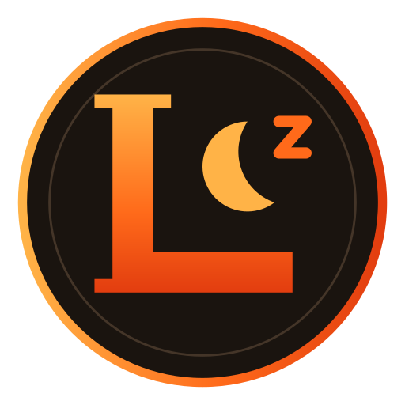

Small tools for your own media server
Lombo Forge is a set of small, open-source tools for people who self-host a media server. Each tool does one job, lives in its own repository and works without the others.
The tools
Every tool says plainly in its README what has and has not been checked on real systems. The badges repeat that.
-
LomboTier
Moves movies and seasons between SSD and HDD based on what people watch (mergerfs).
1.0.0, dry-run by default
-
LomboShrink
Uses the discrete graphics card in your main PC to re-encode a library to H.265, then swaps in the smaller files safely.
0.1.0, graphics-card encoders not yet run on real hardware
-
LomboShelf
A streaming-style home screen and theme for Jellyfin's web client, as a plugin.
Skeleton, never loaded in a real Jellyfin, no release yet
-
LomboNudge
Finds requests that were approved but never arrived, and says why.
0.1.0, never run against real Seerr, Sonarr or Radarr
-

LomboNap
Asks "Still watching?" and stops playback nobody is watching; reports what woke your sleeping disks.
0.1.0, never run with real clients or real disks
Add the plugin repository to Jellyfin
LomboShelf is the one tool installed through Jellyfin itself. It has no released version yet, so the list is empty for now. When there is one:
- In the Jellyfin dashboard open Plugins, then Repositories, then Add.
- Paste this address:
https://manifest.example/manifest.json - Install LomboShelf from the catalogue. It also needs the File Transformation plugin; see its README.
The address above is a placeholder until the project's domain is set.
Friendly to AI agents
Every repository has an AGENTS.md that maps the code and states the rules, a CLAUDE.md that points to it, and
skills in .claude/skills/ for installing, troubleshooting and adapting the tool. Point your coding assistant at a repo and it can set the tool up with you.
Contributing and licence
Issues and pull requests are welcome; the short rules are in the contributing guide. Everything is free software under the GPL-3.0. Headings use the Cinzel font under the SIL Open Font License.
If the tools save you time, you can support the work on Ko-fi.